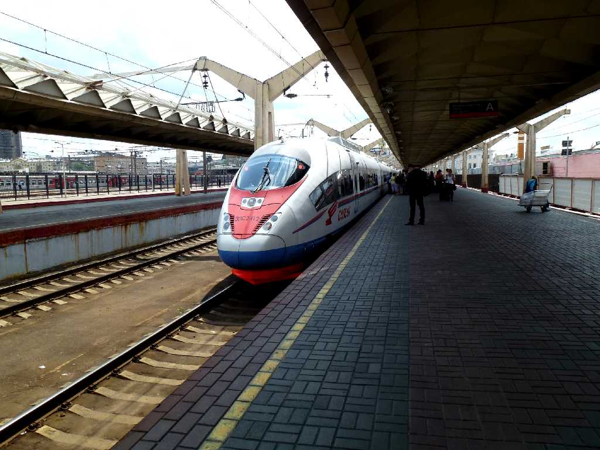
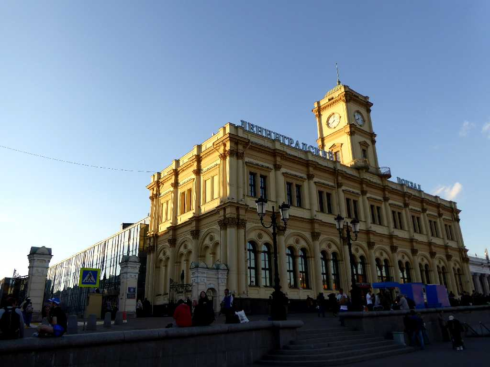
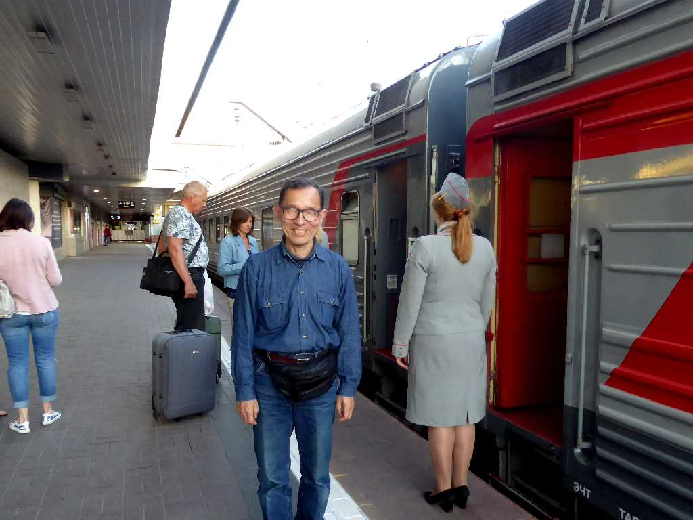

Leningradsky Station Moscow
８０日間世界一周鉄道の旅で１７日目はロシア新幹線でモスクワのレニングラード駅からロシア大西洋岸の街サンクトペテルブルグのモスクワ駅に向かう

July 10 2013 Leningradsky Station
Sapsan Train No.158 13:00 Leningradsky Moscow to 17:45 Moskovsky Sankt Peterburg
ロシア
新幹線隼１５８号(サプサン１５８号)でモスクワのレニングラード駅を離れサンクトペテルブルグのモスクワ駅に向け６５０ｋｍを４時間４５分で走る
Leningradsky Station Moscow
８０日間世界一周鉄道の旅で訪問以来４年ぶりの再訪問

June 7 2017 Train No.018A Kareliya Leningradsky Station
寝台列車カレリア号２１：０５発でモスクワのレニングラード駅を離れペトロザヴォーツク駅翌朝８：５５着に向け１,０００ｋｍを１１時間５０分で走る